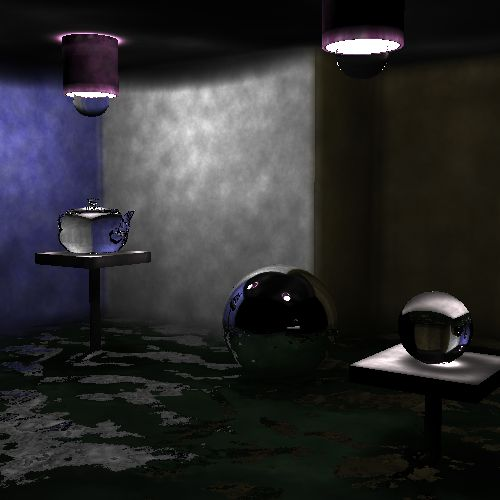

Photon Mapping

Spring 2016
Programming Language: C++
This two-person school project is the final iteration of the ray tracing engine built for a computer graphics class.
The first iteration involved basic ray tracing to render diffuse, reflective, and refractive materials.
Next, bounding boxes and a bounding volume hierarchy are used to speed up the render time by reducing the number of ray intersection tests computed. Finally, progressive photon mapping is implemented for better visuals and more convincing refraction and caustics.